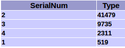

Enable music services Spotify, Apple music and more
Some music services like Spotify, Apple Music, use authent policy OpenAuth2. Credentials data are obfuscated and so no longer readable by thrid party controller. To enable these services with your NOSON controller you have to retrieve login data by yourself using this guide. You will need a Sonos controller app for Windows or OSX, and common unix commands "strings" and "egrep" or similar tools.
-
Do the following for each service you want retrieve credentials.
1 - Run the official Sonos controller in Windows or OSX
Browse only the service for which you want retrieve your credentials. Open the task manager. In the task list select the program of Sonos controller and launch the memory dump of the process.
2 - Upload the memory dump file to your Linux box
The file is commonly named "Sonos.DMP" on Windows. You have to upload it into unix to hack its content.
3 - Search the service login key in the file
Type the following command to retrieve reached credentials data. In the example below the dump file is named "Sonos.DMP".
strings Sonos.DMP | egrep "<key>.*</key>"
The command output will print reached strings as below...lxzyPQ</token><key>fbgjPCI2XvTCLpnoZN...lei0yCZKbvonTsgGx7xv</key><householdId>HHID...
The key string is encapsulated by tag "key". Copy back your key string for this service.
Run again the official Sonos controller and do a new dump for each other service credentials you want to retrieve.
-
Checkout related account data for the service
1 - Get type number for the service account
Select right value from the list below
Service name Type number Spotify 2311 Apple Music 52231 Amazon Music 51463 SoundCloud 40967 Groove 40711 FIT Radio Workout Music 55559 Mixcloud 46343 Anghami 50695 Plex 54279 Google Play Music 38663 Tribe of Noise 43271 Classical Archives 48903 Fnac Jukebox 44039 Gaana 42759 Saavn 41991 Bandcamp 40199
2 - Get the account "SerialNum" for the corresponding type from your sonos device
Go to http://[SONOS_IP_ADDRESS]:1400/status/accounts . You will find the serialNum for the type in the page's table as the example below.

-
Register account in NOSON settings file
Depending of NOSON package you installed, you will find the settings file in the following folder.
NOSON legacy package ~/.config/noson.janbar/noson.janbar.conf NOSON snap package ~/snap/noson/[revision]/.config/noson.janbar/noson.janbar.conf
Edit and fill setting accounts with credentials data. The format is the following.
"type0,serialNum0,key0|type1,serialNum1,key1|type2,serialNum2,key2"
Separate each account with a character pipe "|". See the following example.
[General] accounts="2311,4,user/FR/i0yCjPCIfb...lei0y-zGa8|52231,5,fbgjPCI2XvTCLpnoZN...lei0yCZKbvonTsgGx7xv" firstRun=false queueIndex=0 tabIndex=0 zoneName=Salon
Save the settings file and restart NOSON.